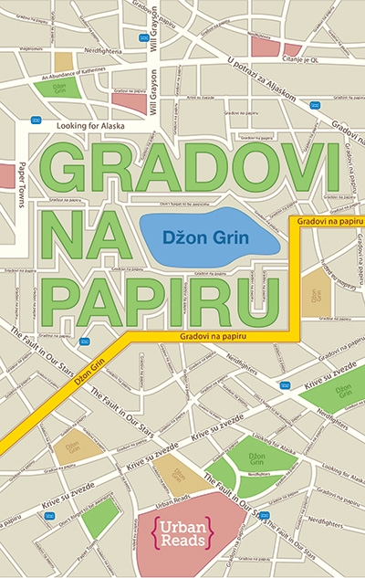
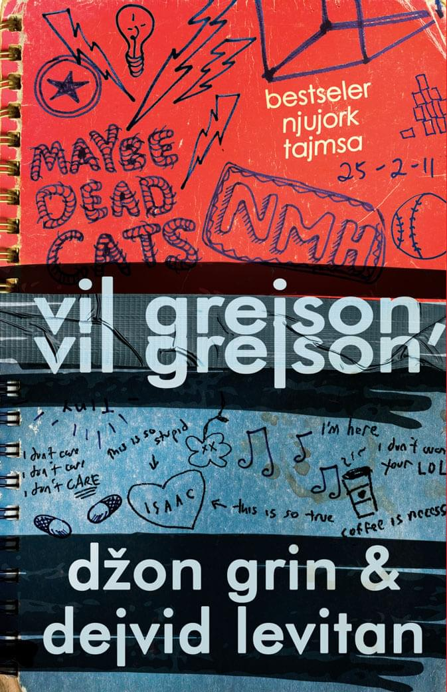
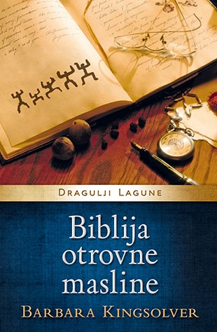
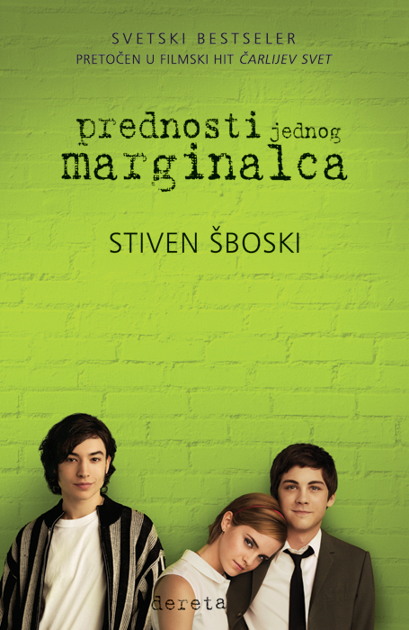
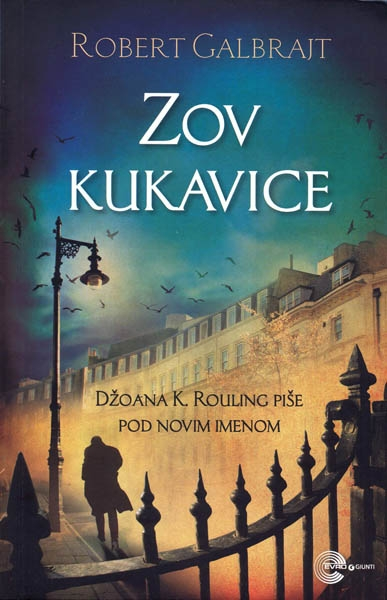

Gradovi na papiru

Kventin Džejkobsen čitav život provodi posmatrajući očaravajuće živahnu Margo Rot Spigelman i voleći je izdaleka. Zato bez reči krene za njom kada mu jedne noći zakuca na prozor obučena kao nindža, pod izgovorom da ga vodi u savršeno isplaniranu osvetničku akciju.
Nakon te nezaboravne zajedničke noći, Margo Rot Spigelman nestaje iz grada, ostavivši Kjuu tragove za koje on veruje da će ga odvesti ka njoj…
Autor: Džon Grin
Cena: 899.00 din
Naivan. Super.

Naivan. Super. je drugi roman kultnog norveškog pisca mlađe generacije, Erlenda Lua, koji mu je doneo svetsku slavu. Preveden je na dvadesetak jezika i izvanredno su ga prihvatili i čitaoci i knjiņevna kritika.Nepretenciozna, topla, poetična i zabavna priča u kojoj glavni junak (25 godina) sam u stanu svog brata razmišlja o smislu života, analizira stvarnost i protok vremena, preispituje sebe i svoju prošlost. Lu nesvakidašnje originalno kombinuje jednostavan jezik i vrlo ozbiljne teme. Očaravajuće emotivna i duhovita, knjiga Naivan. Super. u isto vreme je i autobiografija, komedija, parabola, romansa i filozofska rasprava. Lu sa neverovatnom lakoćom ruši sva pravila, tako da nam se na kraju romana čini da sva ta pravila nikada nisu ni postojala.Ovo je jedna od onih knjiga zbog kojih mladi zavole književnost.
Autor: Erlend Lu
Cena: 551.65 din
Previše sreće

Deset novih pripovedaka vrhunskog stila i umeća od dobitnice Men Buker nagrade za 2009. godinu.
Više nego ijedan pisac posle Čehova, Alis Manro ima cilj i ostvaruje ga, ona ostvaruje gestalt kompletnost u prikazivanju života. Oduvek je imala genijalni dar za razvijanje trenutaka epifanije i rasplitanje njihovog sadržaja. Trenuci za kojima traga u pripovedanju nisu više oni u kojima protagonistkinja dolazi do nekog uvida; sada su to momenti u kojima se ostvaruje sudbinski, neopozivi, dramatični čin. Za čitaoca, to znači da ne može da razmišlja o značenju pripovetke sve dok ne isprati svaki preokret zapleta i da će sijalica da mu se upali tek na poslednjoj stranici.
Autor: Alis Manro
Cena: 1028.50 din
Vil Grejson, Vil Grejson

Jedne hladne večeri, u najneočekivanijem kutku Čikaga ukrstiće se putevi dvojici imenjaka i prezimenjaka. Kako im se svetovi budu prožimali, životi dva Vila Grejsona krenuće u sasvim novom pravcu, vodeći ih ka romantičnom raspletu tokom izvođenja najvrcavijeg mjuzikla u istoriji srednje škole…
Autor: Džon Grin
Cena: 899.00 din
Biblija otrovne masline

Biblija otrovne masline je priča koju pripovedaju supruga i četiri kćeri hrišćanskog propovednika koji ih vodi na misiju u Belgijski Kongo 1959. godine. Sa sobom nose ono što smatraju da će im biti potrebno, ali ubrzo će shvatiti da ih u Kongu očekuje mnogo toga za šta nisu bili pripremljeni. Čitava porodica upada u vrtlog istorijskih događaja koji će se prelamati kroz njihove živote. Ono što sledi jeste uzbudljiva saga o propasti i oporavku koja se proteže kroz tri decenije, roman koji spaja nesvakidašnja iskustva sa starozavetnim ritmovima proročanstava i prokletstava, priča koja je od bodljikavih niti religije, politike, rase, greha i iskupljenja izatkana u zastrašujuću lepotu.
Autor: Barbara Kingsolver
Cena: 1019.15 din
Prednosti jednog marginalca

Prednosti jednog marginalca je priča o Čarlijevom stasavanju i neverovatnom putovanju kroz neistražen svet srednje škole u koji je upravo zakoračio. O prvim ljubavnim sastancima, porodičnim dramama, velikim i iskrenim prijateljstvima, seksu, drogama, ali i ljudskim karakterima. Ovo je vodič kroz intimnu istoriju pop-muzike, gde od prve stranice odzvanjaju čarobne note Bouvijevih Heroja, Cocteau Twins-a, Sonic Youth-a, New Order-a, i, pre svega, The Smiths-a. Jedna od onih „feelgood” knjiga od kojih vam osmeh ne silazi s lica čak i kada obrađuje najozbiljnije probleme kroz koje adolescenti prolaze u svom odrastanju – stazi koju niko ne prođe dva puta, i koja uvek podrazumeva neizvesnu avanturu.
Autor: Stiven Šboski
Cena: 561.00 din
Obilje Katarina

Ako ćemo o vezama, on ima samo jedan tip devojke – svaku koja se zove Katarina. Ako ćemo o devojkama koje se zovu Katarina, sve redom su ga šutnule. Devetnaest puta, da budemo precizni. Kolin Singlton, čudo od deteta, otiskuje se na put da se pozabavi Teoremom Katarinske Predvidivosti, uz pomoć koje planira da anticipira budućnost svake bogovetne veze, da osveti ostavljene i pronađe onu pravu…
Autor: Džon Grin
Cena: 899.00 din
Farenhajt 451

Gaj Montag je vatrogasac. U njegovom svetu dominira televizijski program, literatura je „vrsta na ivici izumiranja“, a vatrogasci češće raspiruju vatre nego što ih gase. Njegov posao je da uništava najilegalniju robu – štampane knjige, a zajedno s njima i kuće u kojima su skrivane.
Montag je zadovoljan svojim poslom i nikada se nije zapitao o posledicama toga što radi. Svakog dana vraća se kući svom jednoličnom životu sa ispraznom suprugom Mildred koja dane provodi u društvu svoje televizijske „porodice“. Sve dok ne upozna mladu Klaris koja će mu pričati o prošlim vremenima kada ljudi nisu živeli u strahu i kada su smeli da imaju svoje ideje umesto onih koje propoveda televizija.
Nakon što Mildred pokuša da se ubije, a Klaris nestane, Montag će početi da preispituje sebe i svet u kojem živi. Poznanstvo sa profesorom odmetnikom preokrenuće njegovu sudbinu.
Autor: Rej Bredberi
Cena: 799.00 din
Zov Kukavice

Kad problematična manekenka padne sa snegom prekrivenog balkona jedne palate u londonskom Mejferu, svi zaključe da se ubila; svi osim njenog brata, koji se za pomoć obraća privatnom detektivu Kormoranu Strajku. Strajk je ratni veteran, čovek sa ožiljcima na telu i duši, u čijem životu odavno nema više ni reda ni poretka. Preuzimanje slučaja pruža mu materijalnu sigurnost, no zauzvrat će morati da plati mnogo veću cenu: što dublje zadire u misteriozno ubistvo, sve su mračnije tajne koje ga okružuju, preteći da i njega progutaju.
Autor: Robert Galbrajt
Cena: 776.05 din